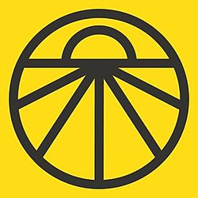
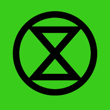
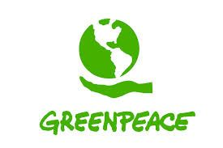

How to Join!
A List of Movements

Sunrise Movement
Look on this website to find a local chapter of sunrise. Sunrise focuses on political action by directly confronting representatives, organizing strikes and rallies, registering voters, and campaigning for candidates.

Extinction Rebellion
Check out this website to find a local chapter of extinction rebellion. to find a local chapter. Extinction rebellion is mainly focused on disruptive action. They organize art builds, large public spectacles that interrupt everyday life, and help with strikes. 
Greenpeace
Greenpeace does a wide range of things to support the climate activist movement. It’s one of the oldest ones on the list, and as such they have more of a base. They engage in drastic actions such as blocking waterways for oil ships, exposing stories of lies that big corporations and governments have been telling, as well as canvassing for candidates and supporting other more local movements around the world.